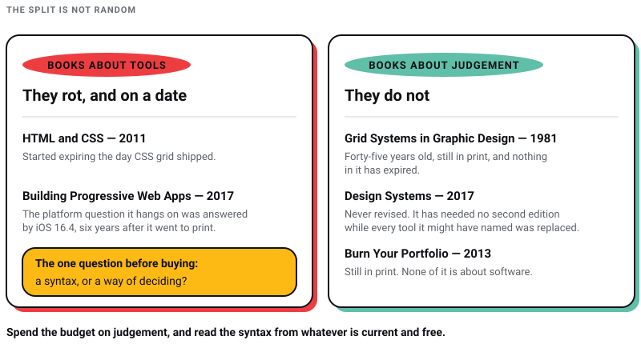

WEB DEVELOPMENT
WEB DEVELOPMENT
AI Website Builders vs Custom Development: Where the Shiny Tools Actually Break
AI website builders are fast, but are they right for your business? Discover where they excel, where they fail, and when custom development is the…


I checked all thirteen books on this list against their publishers, and the state of the standard recommendations is worse than you would expect. Four have been superseded by editions most listings do not mention. Two are commonly credited to fewer authors than actually wrote them. Logo Modernism is often described as covering logos “from the 1940s to today”; it stops in 1980. Josef Müller-Brockmann’s grid manual is often dated 1996; Niggli published it in 1981, and 1996 is the year Müller-Brockmann died.
I run Pixel Street, a design and branding studio in Salt Lake, Kolkata. We design for brands like Coca-Cola, ITC and Marico. A reading list is the easiest kind of article to publish and the easiest to stop maintaining, because a book feels permanent in a way a tool review does not. The editions move underneath it anyway.
All thirteen books are still available, so the list survives intact. But they have not aged at the same rate, and the split is not random. Books about tools rot. Books about judgement do not.
The books about grids, colour and trademarks have aged best, because none of that has moved. Müller-Brockmann’s grid manual is forty-five years old and nothing in it has expired. The web entries are younger and in worse shape, because CSS layout was rewritten underneath them. Jon Duckett’s HTML and CSS is the clearest case: it is a genuinely well-made book from 2011, it has never had a second edition, and both flexbox and CSS grid were specified after it went to print. Its layout chapters teach float-based technique that the specifications replaced.

So my rule before buying any design book is one question: is this teaching me a syntax or a way of deciding? If it is syntax, check the edition date and be ruthless. If it is judgement, the 1981 book is fine.
| Book | Current edition | What to watch for |
|---|---|---|
| The Principles of Beautiful Web Design | 4th, SitePoint, Sept 2020 | Three authors. Two-author listings are the third edition |
| HTML and CSS — Duckett | None. Still 2011 | Buy with a caveat, below |
| Learning Web Design | 6th, O’Reilly, July 2025 | Older reprints still on sale, two editions behind |
| 6 Practical WordPress Projects | Unchanged | Subscription, not a book |
| Building Progressive Web Apps | None. Still 2017 | Ageing, still the clearest on service workers |
| Laws of UX | 2nd, O’Reilly, Feb 2024 | First edition superseded, same title |
| UX Strategy | 2nd, O’Reilly, April 2021 | Superseded; the subtitle changed |
| Color Studies | 3rd | Two authors. Many listings credit one |
| Design Systems — Kholmatova | None. Still 2017 | Holds up |
| Grid Systems in Graphic Design | First published 1981, still in print | Widely misdated to 1996 |
| Logo Modernism | TASCHEN, 2015 | Covers 1940–1980, not “to today” |
| Burn Your Portfolio | None. Still 2013 | Holds up |
| Building a StoryBrand | StoryBrand 2.0, Jan 2025 | First edition superseded |
The book that fixes the most common problem I see in developer-built sites: everything works and nothing looks considered. It organises visual design into five things you can actually act on — layout, colour, typography, texture and imagery — rather than treating taste as something you either have or do not.
Check the authors before you buy. Jason Beaird and James George on their own is the third-edition line-up. Alex Walker joined for the fourth edition, published by SitePoint in September 2020. Both editions sit under the same title, so a listing that names two authors is selling you the older book.
Still the best-looking introduction to markup ever printed, and the one I would hand to a designer who is nervous about code. One concept per spread, colour-coded, no wall of text.
Read it with a caveat, and the caveat is not small. This is a 2011 book that has never had a second edition. Flexbox and CSS grid — the two specifications that define how layout is actually written now — did not exist when it was printed, so it does not mention them, and the layout chapters teach the float-based approach they replaced. Everything it says about HTML structure, the box model, type and colour is still correct. Skip the layout section and learn that part somewhere current. I have left it on the list rather than dropping it because a beginner still gets more from Duckett’s first hundred pages than from a year of tutorials, but recommending it without this warning would be doing you a disservice.
The genuinely current option, and the one to buy if you are only buying one. The sixth edition landed in July 2025, adds more than a hundred pages, and includes four new JavaScript chapters written by the web standards author Aaron Gustafson. It covers container queries, fluid typography and wide-gamut colour, none of which existed two editions ago.
Two things to watch. Older Indian reprints are still on sale and are two editions behind, so buy against the July 2025 sixth edition rather than against the title. And the description that follows this book around, that it teaches “Adobe Photoshop, Sketch, and Dreamweaver”, is simply untrue: the image chapters use Photoshop or GIMP, the tooling chapter covers the command line, CSS processors, build tools and Git, and Dreamweaver appears nowhere in it.
Six worked builds rather than a reference: a theme from scratch, a non-blog site, custom REST API endpoints, a plugin built with Vue, extended-reality content, and a custom admin page via the Settings API. Learning by building is the right shape for WordPress, where the documentation is enormous and the practice is narrow.
Worth knowing before you click. This is not a book you buy. It sits behind a SitePoint Premium subscription rather than being sold as a title. The REST API and custom-admin material is the part that has held up best; if your work is block themes and the site editor, this is not where to start.
Service workers are the hardest idea in front-end web work to hold in your head, and this is still the clearest explanation of them in print. It builds one fictional hotel site through offline caching, push notifications and installability, which beats reading the spec.
Ageing, and no second edition is coming. O’Reilly published it in October 2017 and nothing has replaced it. The specific gap is worth naming, because it is the whole reason people gave up on progressive web apps: Apple did not bring Web Push, home-screen badging or the wake-lock and orientation APIs to web apps on iOS and iPadOS until version 16.4, which WebKit announced in February 2023. The one platform question that decided whether a PWA was worth building got answered six years after this book went to print. The service-worker chapters are still the clearest explanation I know of; read everything it says about platform support as history rather than as advice.
Jakob’s Law, Fitts’s Law, Hick’s Law and the rest, each tied to the psychology underneath it and to an interface you have used. Short, and the most immediately usable book on this list — you can read a chapter on Monday and argue better in a design review on Tuesday.
Get the second edition (O’Reilly, February 2024, ISBN 9781098146962). It deepens the psychology and replaces examples whose apps had drifted. The link above is the 2020 first edition. Search the ISBN rather than the title, because both editions sit under the same name.
The book for the question that comes before the wireframe: is this product worth building at all. Competitive research, value-proposition testing, and validating a concept before anyone opens a design tool. If you are a designer who wants to be in the room where the decision gets made, this is the vocabulary.
Check the subtitle, because it is how you tell them apart. The second edition (O’Reilly, April 2021, ISBN 9781492052432) is subtitled Product Strategy Techniques for Devising Innovative Digital Solutions. “How to Devise Innovative Digital Products that People Want” is the first edition, and the second adds a chapter on qualitative online user research. The link above is the first edition.
Colour taught as a discipline rather than as a mood board. Hue, value, intensity and temperature, the physics and physiology of how we perceive colour, and how the same relationships apply whether you are painting, specifying an interior or building a palette for a screen.
Ron Reed is a co-author, and a great many listings credit Feisner alone. He came in for the third edition, which added the chapter on colour and digital technology — LED, Pantone, colour management — that makes it useful to us rather than only to fine-art students.
A caution I would add: this book is careful about colour relationships, and it does not tell you that a particular colour reliably produces a particular feeling in a buyer. Almost every statistic you will read about colour and brand recognition traces back to a single colour-consulting business, and every version of it I have chased ends there. Colour does real work. The percentages attached to it are mostly invented.
Published in 2017, never revised, and it has aged better than almost anything written about design systems since — because it is about how a team agrees on a shared language, not about which tool holds the components. The chapters on interface inventories and on the difference between a pattern library and a design system are the ones people quote.
Smashing Magazine still sells it directly, hardcover and ebook, nine years on. That it has needed no second edition while every tool it might have named has been replaced is the argument of this whole page in one line.
The one book on this list I would call non-negotiable. Grids from 8 to 32 fields, worked through with the patience of someone who believed layout was an ethical position rather than a preference, extending into three-dimensional grids at the end. Every CSS grid property you write is a descendant of this thinking.
The date attached to it is usually wrong. You will see 1996 given as the publication year. Niggli first published it in 1981. Müller-Brockmann died in 1996, which is almost certainly where the wrong year comes from. The book is still in print from Niggli in its German-English edition, forty-five years on, which is itself the argument for buying it.
Roughly six thousand trademarks, sorted into geometric, effect and typographic, with case studies on Fiat, Daiei and the 1968 Mexico Olympics and profiles of Paul Rand, Yusaku Kamekura and Anton Stankowski. TASCHEN published it in 2015. Jens Müller wrote the introduction; R. Roger Remington wrote the essay on modernism and graphic design.
Check the scope. It is often described as running “from the 1940s to today”. It covers 1940 to 1980 and stops there deliberately — the whole point is the period when corporate identity was being invented. Read it for how a mark carries meaning at 12 pixels, which is a problem the modernists solved before anyone had a favicon.
One buying decision most recommendations skip. TASCHEN also sells Logo Beginnings. Logo Modernism. 45th Ed., a single 512-page volume that folds this book together with its companion, at $25 against $75. It reaches further back, from the mid-1800s to 1980, but it carries a little over three thousand marks rather than six thousand. Buy the big one if you want the reference you will actually pull off the shelf mid-project. Buy the cheap one if you want the history.
The business book disguised as a design book. Bidding, scoping, managing clients, saying no, and surviving the projects that go wrong. Design school teaches almost none of this and it is what actually determines whether a studio lasts. I lost two companies before Pixel Street, and the lessons that survived both were commercial rather than creative ones.
New Riders published it in 2013 and it is still in print. It has aged well for the same reason the grid book has: none of it is about software.
A seven-part framework for making a company explain itself in a sentence a customer can repeat. Its single most useful instruction is that the customer is the hero and the brand is the guide, which quietly corrects most of the copy on most agency websites, ours included at various points.
There is a 2.0. HarperCollins Leadership published a fully revised Building a StoryBrand 2.0 on 7 January 2025 (ISBN 9781400248872). It goes further into the seven story elements the framework is built on, and it bundles access to a StoryBrand AI tool. The link above is the 2017 original. Buy the newer one, and buy it for the framework rather than the bundled tool — the thinking is what survives.
If it is the messaging rather than the framework you are after, our branding reading list with the current edition of each book checked goes deeper, and what actually still works in copywriting now that machines can draft covers the execution.
Learning Web Design, 6th edition, if you build websites and want current information. Grid Systems in Graphic Design if you already build them and want to get better at deciding. They are the newest and the oldest books on this list, which is the whole point.
For syntax, no. Documentation is free, current and better. For structure, yes — a book forces an author to hold an argument together for three hundred pages, and that is exactly the thing the internet is worst at. Buy books for the parts that do not change.
The graphic-design ones, yes. Colour, grids and trademark history do not depreciate. For the web ones, check the edition date before you pay: a 2017 or 2011 title at full price is a worse deal than the same book second-hand, and we have flagged which is which above.
Look at what it assumes rather than what it says. If a layout chapter is built on floats, if a tooling chapter names Dreamweaver or Sketch as the default, or if a WordPress book predates block themes, the surrounding advice may still be sound but the worked examples will teach you habits you then have to unlearn.
Our office keeps a library and people are encouraged to use it. Going through every edition on this list changed how I intend to stock it. A book about software has a shelf life you can very nearly date: Duckett started expiring the day CSS grid shipped, and the PWA book the day iOS 16.4 landed. A book about how to decide does not expire at all — Müller-Brockmann, Janda and Kholmatova will be as useful in ten years as they are today, and two of the three already are. So the rule I would give anyone stocking a studio library is to spend the budget on judgement and read the syntax from whatever is current and free.
If you are building the site these books are for, the typography principles we hold our own work to and how we actually run a logo project are the applied versions of two of the books above. And if you would rather we did it, we are a web design studio in Kolkata and we will tell you when a book would be cheaper than hiring us.
9 min read 26 cited sources Branding
Author
Khurshid Alam is the founder of Pixel Street, an AI-native design & development studio. Design thinking on weekdays and spreadsheets on weekends.
He writes about growth, design, and AI, mostly because someone has to say the quiet parts out loud.
WEB DEVELOPMENT
AI website builders are fast, but are they right for your business? Discover where they excel, where they fail, and when custom development is the…
 Web Design
Web Design
A client asked me this on a call last month: “Khurshid, everyone just asks ChatGPT now. Do we even need a website anymore?” He runs a business doing…
 Branding
Branding
Hey there! Have you ever watched a commercial that made you smile, feel inspired, or even brought you to tears?